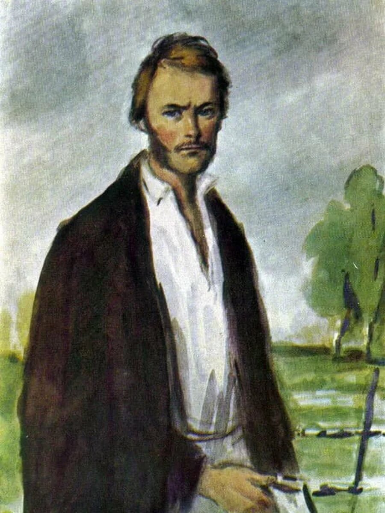

Природа не храм, а мастерская, и человек в ней работник
Мы действуем в силу того, что признаем полезным, — промолвил Базаров. — В теперешнее время полезнее всего отрицание — мы отрицаем
Сперва нужно место расчистить
Всякий человек сам себя воспитать должен — ну хоть как я, например… А что касается до времени — отчего я от него зависеть буду? Пускай же лучше оно зависит от меня
А что касается до времени — отчего я от него зависеть буду? Пускай же лучше оно зависит от меня.
Всякий человек сам себя воспитать должен — ну хоть как я, например… А что касается до времени — отчего я от него зависеть буду? Пускай же лучше оно зависит от меня
Евгений Васильевич Базаров
Главный герой романа И. С. Тургенева «Отцы и дети». Студент-нигилист из разночинцев, отрицающий практически все принятые в обществе ценности и традиционные порядки. Через этого персонажа Тургенев впервые в литературе уделил особое внимание образу нигилиста.

Внешность
"Длинное и худое, с широким лбом, кверху плоским, книзу заостренным носом, большими зеленоватыми глазами и висячими бакенбардами песочного цвету, оно оживлялось спокойной улыбкой и выражало самоуверенность и ум..." Именно таким изображает Тургенев молодого Базарова. Особое внимание следует уделить не дворянскому происхождению Базарова. Он одет в балахон, не носит перчаток, и руки у него обветренные, красные (автор тонко намекает на то что Базаров человек деятельный, любит работу). А "крупные выпуклости просторного черепа..." и большой лоб наталкивают нас на предположение о том, что герой обладает незаурядным умом и способностями.
Характер
Будучи ярым последователем нигилизма, Базаров является весьма противоречивой личностью. Базаров умный, гордый, самоуверенный, не признаёт ни авторитетов, ни любовь, ни искусство, ни природу (ведь этого требует нигилизм). Во время беседы Базаров ведет себя развязано, небрежно, как будто ему не интересно. Он всегда прямолинеен, и резок. Из положительных качеств стоит отметить его трудолюбие, Базаров просыпается рано по утрам и работает, занимается наукой. В жизни всего Базаров привык достигать собственными усилиями, будучи разночинцем. По моему мнению, Евгений - сильная личность так как он предан своим убеждениям. Живя в соответствии с принципами нигилизма, Базаров все таки перед своей смертью понимает, что жизнь сложна и не описывается никакими математическими формулами, любовь нельзя полностью понять с физиологической точки зрения (ему хочется проститься с Одинцовой, в которую он влюблён), нельзя отрицать и смерть. Базаров понимает, что он не гигант, коим себя считал, потому что умирает глупо и нелепо.
Мировозрение
Базаров - молодой врач, нигилист, а значит и материалист. "Что за таинственные отношения между мужчиной и женщиной? Мы, физиологи, знаем, какие это отношения, - "говорит он. Базаров считает, что любовь является всего лишь физиологическим уровнем отношений. Он отвергает любовь, говоря что это пустяки и не нужно этим голову морочить. "Это все романтизм, чепуха, гниль, художество". "Нравится тебе женщина, старайся добиться толку, а нельзя – ну не надо, отвернись – земля не клином сошлась". "Лучше камни бить на мостовой, чем позволить женщине завладеть хотя бы кончиком пальца". Но слишком поздно Евгений понимает важность этого чувства, только при смерти, когда хочет проститься с любимым человеком - Анной Одинцовой.
Базаров безразличен к красоте природы, он ей не восхищается, а пытается вынести из неё какую-то выгоду, как и из всего остального: "Я гляжу в небо только тогда, когда хочу чихнуть", "Природа не храм, а мастерская, и человек в ней работник".
К народу Базаров относиться очень противоречиво. Евгений - врач, он трудиться ради народа, лечит его, помогает, умеет найти общий язык с людьми и «обладает особым умением возбуждать к себе доверие в людях низших», но презирает и критикует: "Мужик наш рад самого себя обокрасть, чтобы только напиться дурману в кабаке", "Русский человек только тем и хорош, что он сам о себе прескверного мнения", "Русский мужик бога слопает", "Народ полагает, что когда гром гремит, это Илья-пророк в колеснице по небу разъезжает. Что ж? Мне соглашаться с ним? Да притом — он русский, а разве я сам не русский", "Чиновники наши берут взятки, у нас нет ни дорог, ни торговли, ни правильного суда".
Искусство Базаров отрицает потому, что оно бесполезно. С точки зрения Базарова, "читать Пушкина — потерянное время, заниматься музыкой смешно, наслаждаться природою — нелепо", "Рафаэль гроша медного не стоит, да и они не лучше его", "Я препакостно себя чувствую, точно начитался писем Гоголя к калужской губернаторше". Базаров полагает, что в этом мире не должно быть места эмоциям, наслаждению красотой природы, музыки. Своим рационализмом Базаров сильно ограничивает палитру жизни.
Любовь — белиберда, непростительная дурь
Я гляжу в небо только тогда, когда хочу чихнуть
Аристократизм, либерализм, прогресс, принципы — подумаешь, сколько иностранных... и бесполезных слов! Русскому человеку они даром не нужны.
Важно то, что дважды два четыре, а остальное все пустяки
Русский человек только тем и хорош, что он сам о себе прескверного мнения
Я ничьих мнений не разделяю; я имею свои
Ты проштудируй-ка анатомию глаза: откуда тут взяться, как ты говоришь, загадочному взгляду? Это всё романтизм, чепуха, гниль, художество.